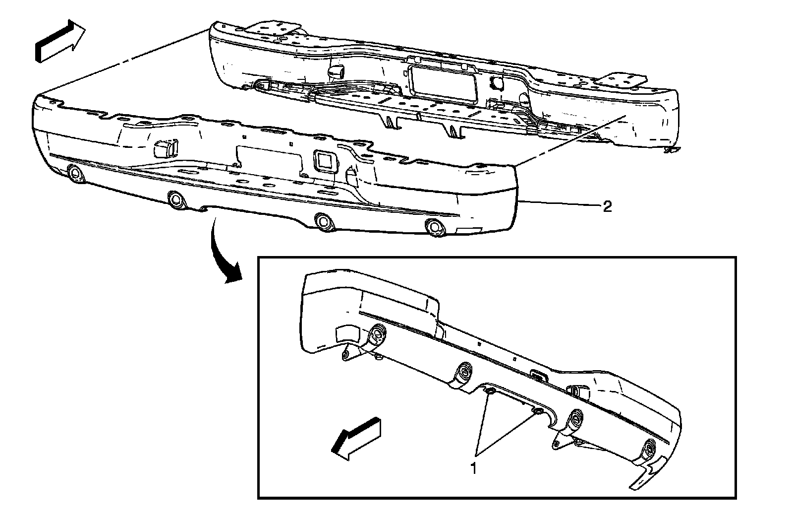
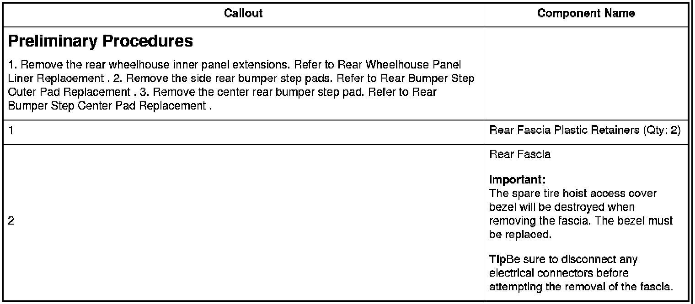

Rear Bumper Fascia Replacement (Avalanche, Cadillac EXT)
Rear Bumper Fascia Replacement (Avalanche, Cadillac EXT)


Preliminary Procedures
Important:The spare tire hoist access cover bezel will be destroyed when removing the fascia. The bezel must be replaced.
TipBe sure to disconnect any electrical connectors before attempting the removal of the fascia.